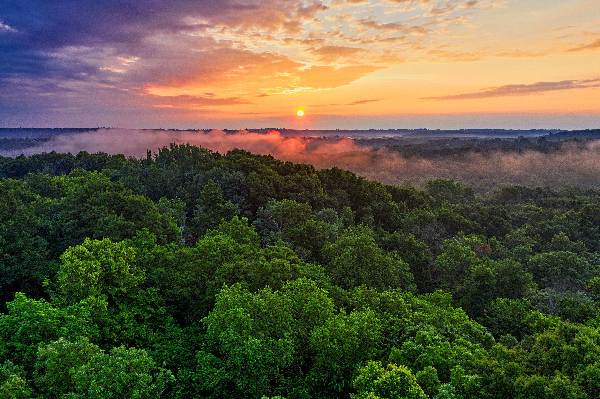

Visiting Brazil
Brazil, a country of immense size and cultural richness, is known for its lively festivals, especially the world-famous Rio Carnival. The Amazon rainforest, often referred to as the "lungs of the Earth," provides an unparalleled opportunity to explore biodiversity. Rio de Janeiro's iconic Christ the Redeemer statue and the stunning Iguazu Falls are must-see landmarks. Brazil's coastline, with its endless beaches like Copacabana and Ipanema, attracts sun-seekers, while the vibrant cities showcase the country's infectious rhythm and friendly spirit.
Rio de Janeiro: Famous for its Carnival, Copacabana and Ipanema beaches, and the iconic Christ the Redeemer statue atop Corcovado Mountain.

Iguazu Falls: Shared with Argentina, these immense waterfalls are a UNESCO World Heritage site and offer a jaw-dropping natural spectacle.

Amazon Rainforest: Explore the world's largest rainforest for unparalleled biodiversity, indigenous cultures, and unique flora and fauna.
Salvador: Known for its vibrant Afro-Brazilian culture, Salvador boasts historic architecture, lively music, and traditional Bahian cuisine.

Pantanal Wetlands: One of the world's largest tropical wetlands, the Pantanal is a wildlife paradise, home to jaguars, capybaras, and diverse bird species.

Brasília: Brazil's modernist capital, designed by Oscar Niemeyer, is a UNESCO World Heritage site with futuristic architecture and urban planning.